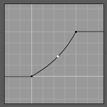
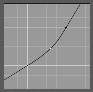

Curve Widget¶

Curve Widget.
The purpose of the Curve Widget is to allow the user to modify an input (such as an image) in an intuitive manner by smoothly adjusting the values up and down using the curve.
The input values are mapped to the X-axis of the graph, and the Y-axis is mapped to the output values.
Control Points¶
Like all curves in Blender, the curve of the Curve Widget is controlled using control points.
By default, there are two control points: one at (0.0, 0.0) and one at (1.0, 1.0), meaning the input is mapped directly to the output (unchanged).
- To move a control point
- Simply click and drag it around.
- To add a new control point
- Click anywhere on the curve where there is not already a control point.
- To remove a control point
- Select it and click the
Xbutton at the top right.
Controls¶
Above the curve graph is a row of controls. These are:
- Zoom In
- Zoom into the center of the graph to show more details and provide more accurate control. To navigate around the curve while zoomed in, click and drag in an empty part of the graph.
- Zoom Out
- Zoom out of the graph to show fewer details and view the graph as a whole. You cannot zoom out further than the clipping borders (see Clipping below).
- Tools
- Reset View
- Resets the view of the curve.
- Vector Handle
- Vector type of curve point’s handle. Breaks the tangent at the curve handle, making it an angle.
- Auto Handle
- Automatic type of curve point’s handle.
- Extend Horizontal
Causes the curve to stay horizontal before the first point and after the last point.
Extend Horizontal.
- Extend Extrapolated
Causes the curve to extrapolate before the first point and after the last point, based on the shape of the curve.
Extend Extrapolate.
- Reset Curve
- Resets the curve in default (removes all points added to the curve).
- Clipping
- Use Clipping
- Forces curve points to stay between specified values.
- Min X/Y and Max X/Y
- Set the minimum and maximum bounds of the curve points.
- Delete
- Remove the selected control point. The first and last points cannot be deleted.
- X, Y
- The coordinates of the selected control point.
{kind=link}
{kind=link}